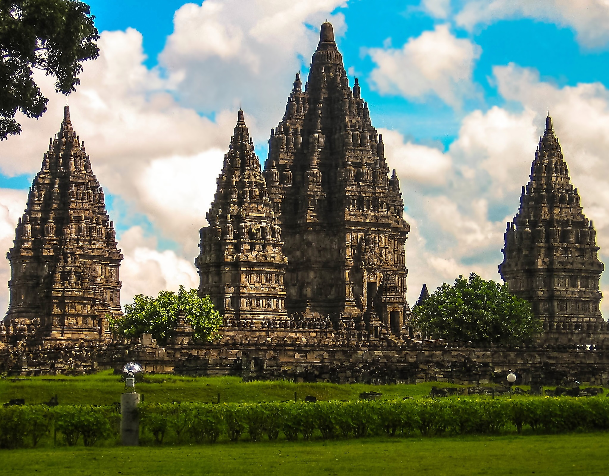
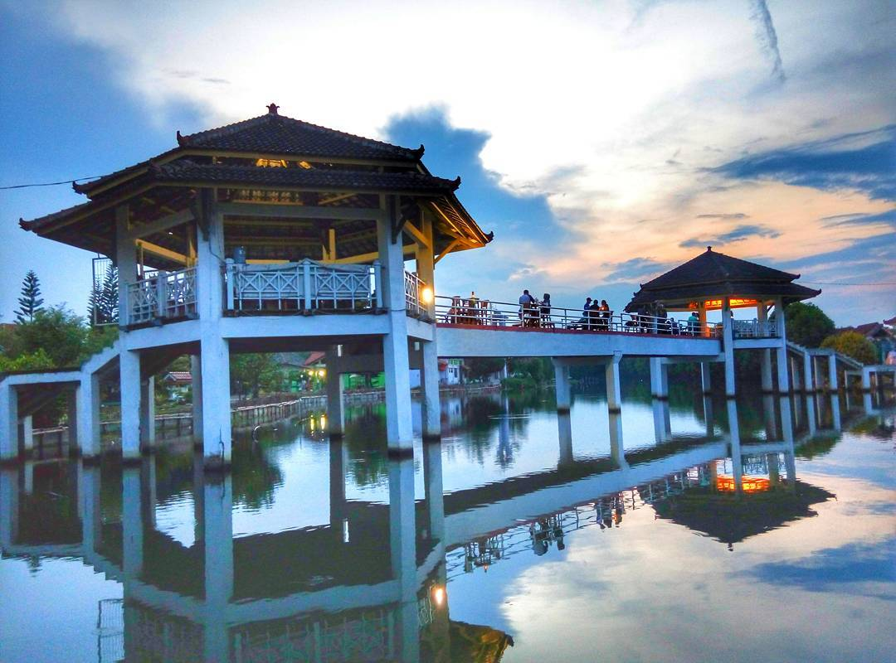
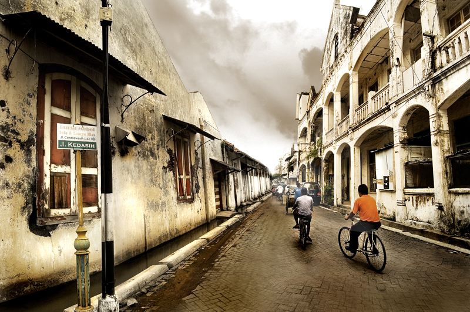
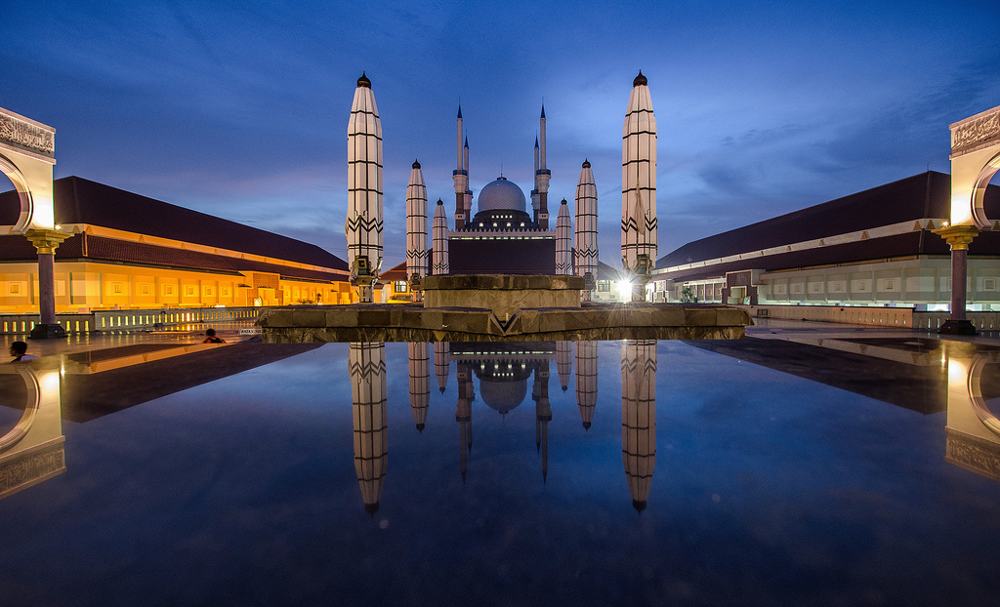
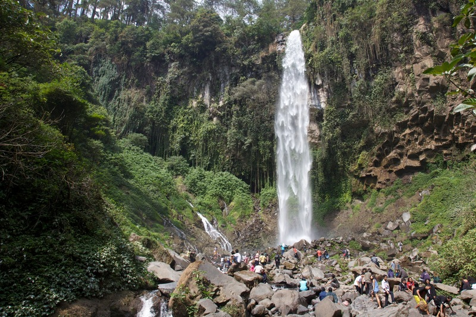
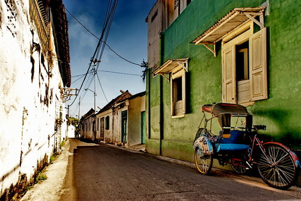
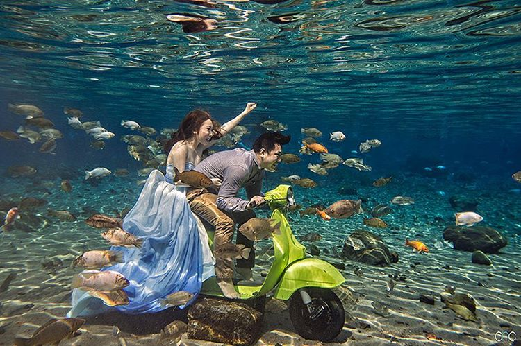
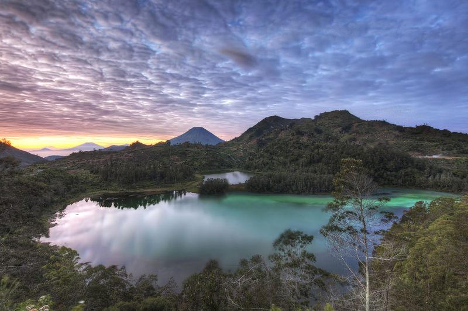

1.candi borobudur
Ikon wisata paling terkenal di Jawa Tengah adalah Candi Borobudur yang terletak di Magelang, tepatnya 40 km arah barat laut Yogyakarta. Tempat wisata di Jawa Tengah ini merupakan peninggalan agama Buddha masa lampau. Selain merupakan candi Buddha terbesar di dunia yang sarat akan nilai sejarah, Borobudur juga didapuk sebagai salah satu dari 7 keajaiban dunia. Di kompleks Candi Borobudur sendiri terdapat 1.460 relief dan 504 stupa yang hingga sekarang masih terjaga keasliannya.

2. candi prambanan
Masih tentang objek wisata sejarah. Kali ini ada Candi Prambanan yang terletak di Klaten, tepatnya di wilayah perbatasan Jawa Tengah dan Yogyakarta. Anda tentu tidak asing kan dengan legenda Roro Jonggrang yang meminta Bandung Bondowoso membangun 1.000 candi dalam satu malam? Ya, Prambanan-lah jawabannya. Ketika berkunjung ke tempat wisata di Jawa Tengah ini, Anda tidak hanya akan disuguhi dengan jejak sejarah yang eksotis, tapi juga hijaunya pepohonan yang tumbuh di sekitar area candi. Pun karena terletak di perbatasan, candi ini dikelola secara kerja sama antara DIY dan Jawa Tengah.

3. puri mareokoco
Jika Anda ingin mengenal kebudayaan Jawa Tengah secara menyeluruh, berkunjunglah ke Puri Maerokoco di Semarang. Di Taman Mini Indonesia Indah-nya Jawa Tengah ini Anda bisa menyaksikan berbagai jenis kebudayaan khas Jateng seperti pakaian khas, rumah adat, sampai permainan tradisional. Tempat wisata di Jawa Tengah ini sangat cocok dijadikan destinasi liburan akhir pekan bersama keluarga, terutama untuk si kecil, karena ada banyak wahana menarik yang bisa dicoba, mulai dari perahu, kereta, sepeda air, dan wahana lain yang tak kalah menarik.

4. kota lama
Masih di Semarang, salah satu objek wisata menarik yang sayang untuk dilewatkan ketika berada di Kota Lumpia ini adalah Kota Lama. Kota Lama sendiri merupakan sebuah kawasan yang oleh pemerintah kolonial dulu dijadikan sebagai pusat perniagaan. Di sini, Anda bisa menjumpai bangunan-bangunan peninggalan Belanda, seperti Gereja Blenduk, Stasiun Kereta Api Tawang, Jembatan Mberok, PT Pelni, Pabrik Rokok Praoe Lajar, Polder Air Tawang, dan masih banyak lagi yang lainnya.

5. lawang sewu
Selain Kota Lama, Anda juga bisa menyaksikan bangunan peninggalan zaman kolonial di Lawang Sewu, Semarang. Meskipun namanya Lawang Sewu, bukan berarti bangunan ini memiliki 1.000 pintu. Hanya saja bangunan ini memang memiliki jumlah pintu yang sangat banyak.Pada zaman dulu, Lawang Sewu dipakai sebagai kantor pusat perkeretaapian di wilayah Semarang. Tidak heran kalau berkunjung ke sini, Anda akan melihat banyak miniatur kereta yang dipajang di meja yang dilindungi kaca-kaca.

6. masjid agung jateng
Berkeliling Semarang rasanya tak lengkap kalau tidak mengunjungi salah satu bangunan paling ikonik di kota ini. Ya, apa lagi kalau bukan Masjid Agung Jawa Tengah? Masjid yang dibangun sejak tahun 2001 dan selesai pada tahun 2006 ini mengadaptasi arsitektur Islam, Romawi, dan Jawa, lho.Di sini, Anda bisa menaiki tower masjid dan melihat indahnya Kota Semarang dari ketinggian. Harga tiket masuknya pun cukup murah, yakni hanya sekitar Rp7.000. Yang paling menarik di sini adalah payung raksasa berjumlah 6 buah seperti yang terdapat di Masjid Nabawi di Tanah Suci.

7. grojogan sewu
Dari Semarang kita beranjak ke arah timur, tepatnya di Karanganyar. Di kabupaten ini ada sebuah objek wisata yang selalu ramai dikunjungi wisatawan setiap tahunnya, yaitu Grojogan Sewu Tawangmangu.Tempat wisata di Jawa Tengah ini paling pas dikunjungi saat musim penghujan. Selain udaranya lebih sejuk, debit air yang banyak juga membuat air terjun terlihat makin megah. Banyak juga fasilitas yang disediakan pihak pengelola untuk para pengunjung.

8. kampung batik laweyan
Dari Karanganyar mari bergeser sedikit ke Surakarta, atau yang lebih akrab disebut Solo. Ada banyak objek wisata menarik yang tak boleh dilewatkan ketika berada di sini, salah satunya adalah Kampung Batik Laweyan. Menurut penuturan sejarah, warga kampung ini mulai membatik sejak zaman dulu lewat pitutur Kiai Ageng Henis (kakek Panembahan Senopati). Sampai sekarang, warga Kampung Laweyan masih setia dengan hobi dan pekerjaan membatik.

9. umbul ponggok
Salah satu tempat wisata di Jawa Tengah yang sedang banyak diburu wisatawan adalah Umbul Ponggok yang berada di Klaten. Bagi yang belum tahu, Umbul Ponggok merupakan sebuah kolam renang raksasa yang dikonsep mirip lautan, lengkap dengan ikan, batu karang, dan segala pernik-perniknya.Tidak hanya bisa bermain air, Anda pun bisa menyelam sembari berpose di dalam air. Saking indahnya tempat wisata di Jawa Tengah ini sampai banyak calon pengantin yang menjadikannya lokasi untuk foto prewedding lho.

10. dataran tinggi dieng
empat wisata di Jawa Tengah selanjutnya yang sangat terkenal dan tidak boleh dilewatkan adalah Dataran Tinggi Dieng atau Dieng Plateau yang terletak di Kabupaten Wonosobo. Dieng Plateau merupakan sebuah daerah sejuk yang berada di ketinggian 2.000 mdpl, persisnya 30 km dari pusat Kota Wonosobo. Di tempat wisata di Jawa Tengah ini, ada sebuah kawah gunung berapi yang masih aktif. Selain udaranya sejuk dan pemandangannya sangat asri, pengunjung juga bisa melihat sebuah candi Hindu yang terletak di sekitar lokasi.
